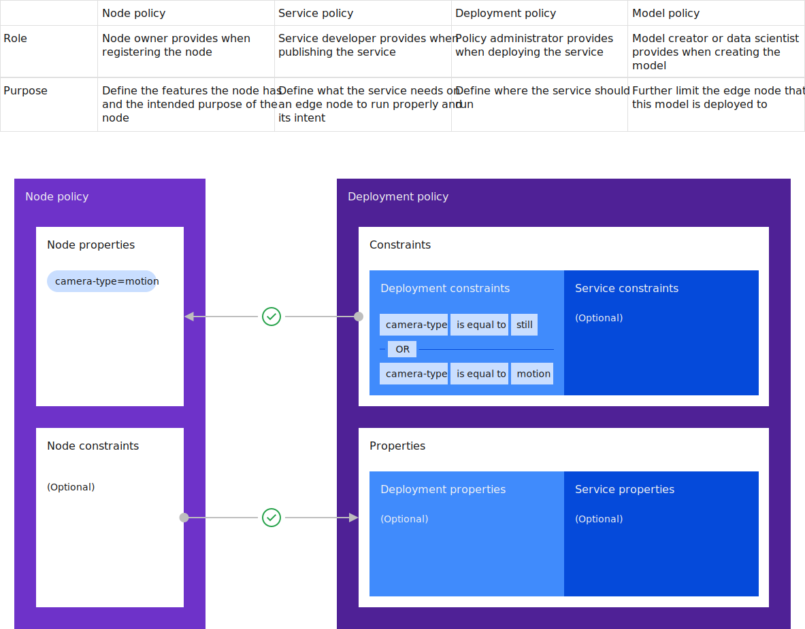

This section highlights a real-world scenario where policy types are described.

Consider a customer who has installed ATM cameras to detect theft (the customer has other types of edge nodes as well). The customer uses a combination of walk-up (still) and drive-through (motion) ATMs. In this case, two third-party services are available. Each service can detect suspicious activity at the ATMs, but customer testing has determined that service atm1 more reliably detects suspicious activity at walk-up (still) ATMs and service atm2 more reliably detects suspicious activity at drive-through (motion) ATMs.
This is how policy is expressed to achieve the desired service and model deployment:
camera-type: still, atm-type: walk-upcamera-type: motion, atm-type: drive-thru(Optional)camera-type == stillcamera-type == motionNote: The hzn command sometimes uses the term business policy when referring to deployment policy.
The node policy (set by the technician that sets up the ATMs) states facts about each node; for example, whether the ATM has a camera and the type of location the ATM is in. This information is easy for the technician to determine and specify.
The service policy is a statement about what the service requires to operate correctly (in this case a camera). The third-party service developer knows this information, even though they do not know which customer is using it. If the customer has other ATMs that do not have cameras, these services are not deployed to those ATMs because of this constraint.
The deployment policy is defined by the customer CIO (or whoever is managing their edge fabric). This defines the overall service deployment for the business. In this case, the CIO expresses the desired service deployment outcome, that atm1 should be used for walk-up ATMs and atm2 should be used for drive-through ATMs.
Policy can be attached to a node. The node owner can provide this at registration time, and it can be changed at any time directly on the node or centrally by an Open Horizon administrator. When node policy is changed centrally, it is reflected to the node the next time the node heartbeats to the management hub. When node policy is changed directly on the node, the changes are reflected immediately to the management hub so that service and model deployment can be reevaluated immediately. By default, a node has some built-in properties that reflect memory, architecture, and number of CPUs. It can optionally contain any arbitrary properties; for example, the product model, attached devices, software configuration, or anything else deemed relevant by the node owner. Node policy constraints can be used to restrict which services are permitted to run on this node. Each node has only one policy that contains all the properties and constraints that are assigned to that node.
Note: Service policy is an optional function.
Like nodes, services can express policy and have some built-in properties as well. This policy is applied to a published service in the exchange and is created by the service developer. Service policy properties could state characteristics of the service code that node policy authors might find relevant. Service policy constraints can be used to restrict where, and on what type of devices, this service can run. For example, the service developer can assert that this service requires a particular hardware setup such as CPU/GPU constraints, memory constraints, specific sensors, actuators, or other peripheral devices. Typically, properties and constraints remain static for the life of the service because they describe aspects of the service implementation. In expected usage scenarios, a change to one of these is usually coincident with code changes that necessitate a new service version. Deployment policies are used to capture the more dynamic aspects of service deployment that arise from business requirements.
Deployment policy drives service deployment. Like the other policy types, it contains a set of properties and constraints, but it also contains other things. For example, it explicitly identifies a service to be deployed, and it can optionally contain configuration variable values, service rollback versions, and node health configuration information. The Deployment policy approach for configuration values is powerful because this operation can be performed centrally, with no need to connect directly to the edge node.
Administrators can create a deployment policy, and Open Horizon uses that policy to locate all of the devices that match the defined constraints and deploys the specified service to those devices using the service variables configured in the policy. Service rollback versions instruct Open Horizon which service versions should be deployed if a higher version of the service fails to deploy. The node health configuration indicates how Open Horizon should gauge the health (heartbeats and management hub communication) of a node before determining if the node is out of policy.
Because deployment policies capture the more dynamic, business-like service properties and constraints, they are expected to change more often than service policy. Their lifecycle is independent from the service they refer to, which gives the policy administrator the ability to state a specific service version or a version range. Open Horizon then merges service policy and deployment policy, and then attempts to find nodes whose policy is compatible with that.
Machine learning (ML)-based services require specific model types to operate correctly, and Open Horizon customers need to be able to place specific models on the same, or a subset of, nodes where those services have been placed. The purpose of model policy is to further narrow the set of nodes where a given service is deployed, which enables a subset of those nodes to receive a specific model object via the Hello world using model management.
In the ATM example, the customer operates walk-up ATMs in rural locations that are used infrequently. The customer does not want the rural ATMs to run continuously, and they do not want to turn on the ATM every time it perceives a nearby object. So, the service developer adds an ML model to the atm1 service that turns on the ATM if it identifies a person approaching. In order to specifically deploy the ML model to those rural ATMs, they configure the policy:
camera-type: still, atm-type: walk-up, location: rural(Optional)"destinationPolicy": {
"constraints": [ "location == rural" ],
"services": [
{ "orgID": "$HZN_ORG_ID",
"serviceName": "atm1",
"arch": "$ARCH",
"version": "$VERSION"
}
]
}
Within the MMS object, the model policy declares a service (or list of services) that can access the object (in this case, atm1) and declares properties and constraints that enable Open Horizon to further narrow the proper placement of the object on the ATMs in the rural locations. Other services running on the ATM will not be able to access the object.
Properties are essentially statements of facts that are expressed as name=value pairs. Properties are also typed, which provides a way to construct powerful expressions. The following tables show the property value types that are supported by Open Horizon and the built-in node and service policy properties. Node owners, service developers, and deployment policy administrators can define individual properties to meet their needs. Properties do not need to be defined in a central repository; they are set and referenced (in constraint expressions) as needed.
| Accepted property value types |
|---|
| version - dotted decimal expression supporting 1, 2 or 3 parts; for example, 1.2, 2.0.12, etc |
| string * |
| list of strings (comma-separated strings) |
| integer |
| boolean |
| float |
*String values that contain spaces must be quoted.
Built-in properties provide well-defined names for common properties so that constraints can all refer to them in the same way. For example, if a service needs x CPUs in order to execute properly or efficiently, it can use the openhorizon.cpu property in its constraint. Most of these properties cannot be set, but instead are read from the underlying system and ignores any values set by a user.
| Name | Type | Description | Policy type |
|---|---|---|---|
| openhorizon.cpu | Integer | The number of CPUs | Node |
| openhorizon.memory | Integer | The amount of memory in MBs | Node |
| openhorizon.arch | String | The node hardware architecture (for example, amd64, armv6, and so on) | Node |
| openhorizon.hardwareId | String | The node hardware serial number if available via linux API; otherwise, it is a crypto-secure random number that does not change for the life of node registration | Node |
| openhorizon.allowPrivileged | Boolean | Allow containers to use privileged capability such as running privileged or having the host’s network that is attached to the container. | Node |
| Name | Type | Description | Policy type |
|---|---|---|---|
| openhorizon.service.url | String | The unique name of the service | Service |
| openhorizon.service.org | String | The multi-tenant org where the service is defined* | Service |
| openhorizon.service.version | Version | The version of a service using the same semantic version syntax (for example, 1.0.0) | Service |
*In a constraint, if service.url is specified, but service.org is omitted, the org defaults to that of the node or deployment policy that defines the constraint.
| In Open Horizon, node, service, and deployment policies can define constraints. Constraints are expressed as a predicate in a simple text form and refer to properties and their values, or a range of their possible values. Constraints can also contain boolean operators such as AND (&&), OR ( | ) between expressions of property and value to form longer clauses. For example, openhorizon.arch == amd64 && OS == Mojave. Finally, parenthesis can be used to create evaluation precedence within a single expression. |
| Property Value Type | Supported Operators |
|---|---|
| integer | ==, <, >, <=, >=, =, != |
| string* | ==, !=, = |
| List of string | in |
| Boolean | ==, = |
| version | ==, =, in** |
*For string types, a quoted string, inside which is a list of comma-separated strings, provide a list of acceptable values; for example, hello == "beautiful, world" will be true if hello is “beautiful” or “world”.
** For a version range, use in instead of ==.
To illustrate the full power of the bi-directional nature of policy, consider the real-world example in this section and add some constraints to the node. In our example, if some of the rural, walk-up ATMs are in a waterfront location that creates a glare that the existing atm1 service used by the other walk-up ATMs cannot handle. This requires a third service that can handle the glare better for those few ATMs, and policy that isconfigured as follows:
camera-type: still, atm-type: walk-up; constraints: feature == glare-correction(Optional)camera-type == still; properties: feature: glare-correctionAgain, the node policy states the facts about the node; however, in this case, the technician who set up the waterfront ATMs specified a constraint that the service to deploy on this node must have the glare-correction feature.
The service policy for atm3 has the same constraint as the others, which requires a camera on the ATM.
Because the customer knows the atm3 service handles glare better, the customer sets this constraint in the deployment policy associated with atm3, which satisfies the property set on the node and results in this service being deployed to the waterfront ATMs.
| Command | Description |
|---|---|
hzn policy list |
This edge node’s policy. |
hzn policy new |
An empty node policy template that can be filled in. |
hzn policy update --input-file=INPUT-FILE |
Update the node’s policy. The node’s built-in properties are automatically added if the input policy does not contain them. |
hzn policy remove [<flags>] |
Remove the node’s policy. |
hzn exchange node listpolicy [<flags>] <node> |
Display the node policy from the Horizon Exchange. |
hzn exchange node addpolicy --json-file=JSON-FILE [<flags>] <node> |
Add or replace the node policy in the Horizon Exchange. |
hzn exchange node updatepolicy --json-file=JSON-FILE [<flags>] <node> |
Update an attribute of the policy for this node in the Horizon Exchange. |
hzn exchange node removepolicy [<flags>] <node> |
Remove the node policy in the Horizon Exchange. |
hzn exchange service listpolicy [<flags>] <service> |
Display the service policy from the Horizon Exchange. |
hzn exchange service newpolicy |
Display an empty service policy template that can be filled in. |
hzn exchange service addpolicy --json-file=JSON-FILE [<flags>] <service> |
Add or replace the service policy in the Horizon Exchange. |
hzn exchange service removepolicy [<flags>] <service> |
Remove the service policy in the Horizon Exchange. |
hzn exchange deployment listpolicy [<flags>] [<policy>] |
Display the business policies from the Horizon Exchange. |
hzn exchange deployment new |
Display an empty deployment policy template that can be filled in. |
hzn exchange deployment addpolicy --json-file=JSON-FILE [<flags>] <policy> |
Add or replace a deployment policy in the Horizon Exchange. Use hzn exchange deployment new for an empty deployment policy template. |
hzn exchange deployment updatepolicy --json-file=JSON-FILE [<flags>] <policy> |
Update one attribute of an existing deployment policy in the Horizon Exchange. The supported attributes are the top-level attributes in the policy definition as shown by the command hzn exchange deployment new. |
hzn exchange deployment removepolicy [<flags>] <policy> |
Remove the deployment policy from the Horizon Exchange. |
hzn dev service new [<flags>] |
Create a new service project. This command will generate all IEC service metadata files including service policy template. |
hzn deploycheck policy [<flags>] |
Check policy compatibility between a node, service and deployment policy. Also, you can use hzn deploycheck all to check for correct service variable configurations. |
See Exploring the hzn command for more information about using the hzn command.